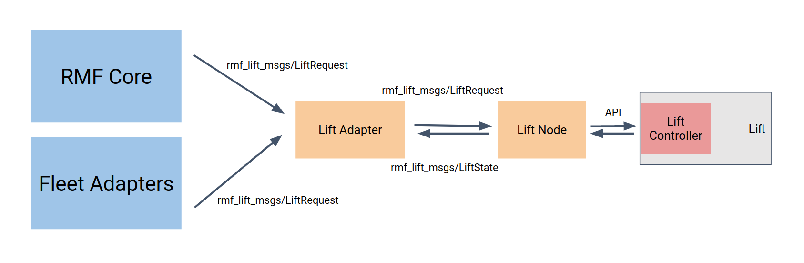

Lifts (i.e. Elevators)
Map requirements
Before a lift can be properly integrated, be sure to draw up the lift locations with the correct lift names and levels on the navigation graph using traffic_editor. The instructions to do so can be found in Traffic Editor chapter.
Integration
Elevator integration will allow RMF to work over multiple levels, resolving conflicts and managing shared resources on a larger scale. Similar to door integration, the basic requirement is that the lift controller accepts commands using a prescribed protocol, OPC is one such example.
The elevators will be integrated in a similar fashion as doors as well, relying on a lift node and a lift adapter. The following block diagram shows how each component works with each other:
The lift node will act as a driver to work with the lift controller. An example of a lift node can be found in this repository. The node will publish its state and receive lift requests over ROS 2, using the messages and topics listed below.
| Message Types | ROS2 Topic | Description |
|---|---|---|
rmf_lift_msgs/LiftState | /lift_states | State of the lift published by the lift node |
rmf_lift_msgs/LiftRequest | /lift_requests | Direct requests subscribed by the lift node and published by the lift adapter |
rmf_lift_msgs/LiftRequest | /adapter_lift_requests | Requests to be sent to the lift adapter/supervisor to request safe operation of lifts |
A lift adapter subscribes to lift_states while keeping track of the internal and desired state of the lift in order to prevent it from performing any actions that might interrupt mobile robot or normal operations. The lift adapter performs this task by receiving lift requests from the fleet adapters and the RMF core systems and only relaying the instructions to the lift node if it is deemed appropriate. Any requests sent directly to the lift node, without going through the lift adapter, will also be negated by the lift adapter, to prevent unwanted disruption to mobile robot fleet operations.